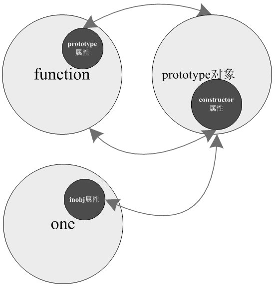

第一步是建立一个新对象（叫A吧）；
第二步将该对象（A）内置的原型对象设置为构造函数(就是Person)prototype 属性引用的那个原型对象；
第三步就是将该对象（A）作为this 参数调用构造函数(就是Person)，完成成员设置等初始化工作。
注意这个新名词跟prototype对象不是一回事，为了区别我叫它inobj,inobj就指向了函数Person的prototype对象。在person的prototype对象中出现的任何属性或者函数都可以在one对象中直接使用，这个就是javascript中的原型继承了。
typeof返回一个表达式的数据类型的字符串，返回结果为js基本的数据类型，包括number,boolean,string,object,undefined,function.使用typeof的一个不好的地方就是它会把Array还有用户自定义函数都返回为object
//为了让obj成为Function的实例也就是(obj instanceof Function)显示true //只需要f.prototype=Function.prototype f.prototype=Function.prototype; //但是我不推荐上面这种做法,因为对f.prototype的修改会破坏了Function.prototype，例如f.prototype.name="51js"会给Function的原型也加上1个name属性 //正确的做法应该是下面这样,这样诸如f.prototype.name的修改就不会破坏Function的原型了 f.prototype=new Function(); f.prototype.name="zhouyang";
function Animal(){this.a="a";}
function cat(){this.b="b";}
cat.prototype=new Animal();
cat.prototype.up="zhouyang";
Animal1=new Animal();
alert("Animal1.up "+Animal1.up) //==>undefined
alert("Animal1.a "+Animal1.a) //===>a
alert("Animal1.b "+Animal1.b) // ====undefined
cat1=new cat();
alert("cat1.up "+cat1.up)//===>zhongyang
alert("cat1.a "+cat1.a)//===>a
alert("cat1.b "+cat1.b)//====>b
function Animal(){this.a="a";}
function cat(){this.b="b";}
cat.prototype=Animal.prototype;
cat.prototype.up="zhouyang";
Animal1=new Animal();
alert("Animal1.up "+Animal1.up) //==>zhongyang
alert("Animal1.a "+Animal1.a) //===>a
alert("Animal1.b "+Animal1.b) // ====undefined
cat1=new cat();
alert("cat1.up "+cat1.up)//===>zhongyang
alert("cat1.a "+cat1.a)//===>a
alert("cat1.b "+cat1.b)//====>b
//定义函数
var f=function(){
var j;
}
//这里显示true,因为f的构造器是Funtion,f内部的原型属性_proto_被赋值为构造器的prototype也就是Function的prototype
//instanceof检查f内部的_proto_是否与Function.prototype有共同的结点,如果有则返回true
alert("f is functon"+(f instanceof Function))
//obj是f的实例
var obj=new f;
//obj内部的原型属性_proto_在new f时被赋值为f.prototype,显然f.prototype与Function.prototype没有共同的结点，因此显示false
alert("obj is function"+(obj instanceof Function))
//为了让obj成为Function的实例也就是(obj instanceof Function)显示true
//只需要f.prototype=Function.prototype
f.prototype=Function.prototype;
//但是我不推荐上面这种做法,因为对f.prototype的修改会破坏了Function.prototype，例如f.prototype.name="51js"会给Function的原型也加上1个name属性
//正确的做法应该是下面这样,这样诸如f.prototype.name的修改就不会破坏Function的原型了
f.prototype=new Function();
f.prototype.name="zhouyang";
/**关键是这里,再次调整constructor属性为f,维护constructor这种做法是为了保证obj能够正确回朔原型链,
*假如我们要获取obj内部的原型链,但只知道obj,不知道obj是怎么实例化来的，由于obj内部的_proto_属性不可见，那么我们要获取obj内部原形只能通过obj.constructor来获取构造器，然后再获取构造器的prototype
*1.如果我们加下面这句（f.prototype.constructor=f），回朔obj原型链
*只能回朔1层原型链也就是obj.constructor.prototype（子类原型）-->obj.constructor.prototype.constructor.prototype(依然是子类原型),这样只能回朔1层原型链
**/
f.prototype.constructor=f;
obj=new f;
alert("找到子类了---"+obj.constructor+"\n"
+"找到的还是子类，无法找到父类---"+obj.constructor.prototype.constructor)
alert(obj instanceof Function)
/**2.如果我们用下面的方法在f定义里设置f的实例的constructor,而不是f原型的constructor
*就可以回朔2层原型链也就是 obj.constructor.prototype（子类原型）-->obj.constructor.prototype.constructor.prototype(父类原型)
*显然这种情况是符合对象原型继承链的情况的
*/
f=function(){
this.constructor=arguments.callee;
}
f.prototype=new Function();
f.prototype.name="zhouyang";
obj=new f;
alert("找到子类了---"+obj.constructor+"\n"
+"找到父类了---"+obj.constructor.prototype.constructor)
alert(obj instanceof Function)